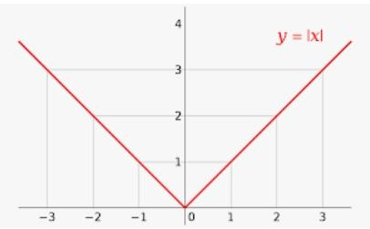
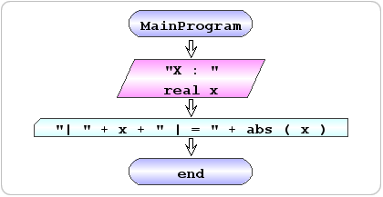

| Exercício | Dificuldade | Pontos | Data limite | Créditos |
|---|---|---|---|---|
| Ficha03_015 | Demonstration | 1.0 | (c)M@nso 2021 |
| Problema | Fluxograma | Algorithmi |
|---|---|---|
 |
 | begin MainProgram
read real x "X : "
write "| " + x + " | = " + abs(x)
end MainProgram
|
| Input | Output |
|---|---|